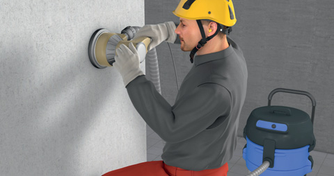

Gefährdungen
- Staub kann je nach Staubart, Größe der Partikel und Ort der Ablagerung zu Reizungen und Erkrankungen der Atemwege, der Haut und der Augen führen.
- Asbeststaub kann zur Asbestose, einem Mesotheliom und zu Kehlkopf- oder Lungenkrebs führen.
- Mineralischer, quarzhaltiger Staub kann zur Silikose führen und Lungenkrebs verursachen.
- Staub von Laubholz kann Krebs der Nasenschleimhaut auslösen.
- Stäube mit mikrobiologischer Kontamination können je nach Art der Keime Infektionen auslösen und sensibilisierende oder toxische Wirkungen haben.
Allgemeines
- Staub ist die Sammelbezeichnung für feinste feste Teilchen (Partikel), die in der Atemluft aufgewirbelt werden und lange Zeit schweben können.
- Die schädigende Wirkung ist abhängig von:
- der Art des Staubes,
- der Dauer und Höhe der Staubbelastung,
- dem Ort der Ablagerung in den Atemwegen und
- der Teilchengröße.
- Staubarten:
- mineralischer Mischstaub, z. B. aus Sand, Kalk, Gips, Zement oder Beton mit unterschiedlichem Quarzanteil,
- Holzstaub,
- Asbestfaserstaub,
- Keramikfaserstaub,
- Staub mikrobiologischer Herkunft.
- Tabakrauch erhöht die Gefahr von Lungenerkrankungen bei Staubbelastung.
Schutzmaßnahmen
- Gefährdungsbeurteilung durchführen (Branchenlösungen unter www.staub-war-gestern.de).
- Staubarme Produkte verwenden (z. B. staubarme Fliesenkleber, Granulate). Auswahlhilfen werden im Gefahrstoffinformationssystem (WINGIS) der BG BAU online angeboten.
- Staubarme Arbeitsverfahren und Maschinen anwenden (z. B. Absaugung mit Entstaubern der Staubklasse M, Nassbearbeitung mit Aerosolbindung). Auswahlhilfen werden bei GISBAU unter der Rubrik "Weniger Staub am Bau" online angeboten.
- Ist eine technische Schutzmaßnahme nicht ausreichend, kann eine Kombination von Schutzmaßnahmen (z. B. abgesaugte Handmaschine und Luftreiniger) eine ausreichende Staubreduktion bringen.
- Arbeitsplatzgrenzwerte (AGW) für Stäube beachten.
- Ist die Erfassung von Stäuben am Arbeitsplatz nicht ausreichend wirksam, ist eine Ausbreitung von Stäuben zu verhindern (z.B. gerichtete Lüftung, Abschottungsmaßnahmen)
- Technische und organisatorische Maßnahmen haben Vorrang vor personenbezogenen Schutzmaßnahmen.
- Beschäftigte unterweisen.
- Nicht trocken kehren. Nicht mit Druckluft abblasen.
- Bei staubintensiven Tätigkeiten Schutzkleidung tragen und getrennt von der Arbeitskleidung aufbewahren.
- Regelmäßige Reinigung der Haut durch Waschen oder Duschen.
- Bei sichtbarer Staubentwicklung Atemschutz tragen.
Arbeitsmedizinische Vorsorge
- Arbeitsmedizinische Vorsorge nach Ergebnis der Gefährdungsbeurteilung veranlassen (Pflichtvorsorge) oder anbieten (Angebotsvorsorge). Hierzu Beratung durch den Betriebsarzt.
07/2021